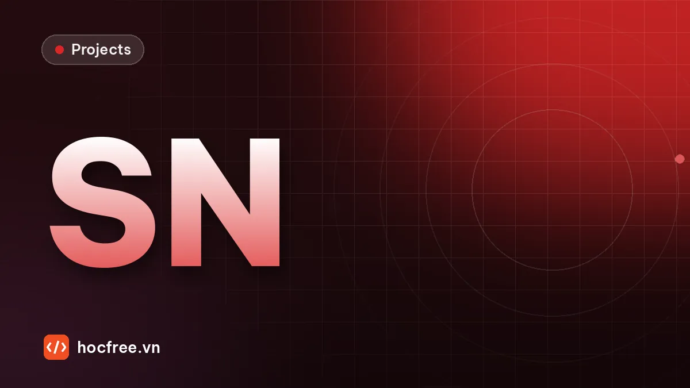

Dự án: đọc và xác minh số seri in trên linh kiện (OCR + OCV)
Định vị vùng chữ bằng template matching, đọc và sửa nhầm theo định dạng, kiểm tra chữ số kiểm tra, xác minh với lệnh sản xuất và xuất báo cáo CSV.

Học xong bài này, bạn sẽ
- Định vị vùng chữ bằng template matching
- Đọc và sửa nhầm theo định dạng
- Xác minh với lệnh sản xuất
Nên học trước: OCR bằng Deep Learning
Nội dung bài viết
Đây là dự án tổng kết chặng Measurement / Matching / OCR. Bạn xây một trạm kiểm tra số seri in trên nhãn linh kiện: chụp ảnh, định vị vùng chữ bằng template matching theo logo trên nhãn, đọc số seri, sửa nhầm lẫn theo định dạng, kiểm tra chữ số kiểm tra, xác minh với lệnh sản xuất (đúng mã sản phẩm, trong dải seri được cấp, không trùng), trả OK/NG kèm lý do và ghi báo cáo CSV. Dự án dùng lại trực tiếp bài template matching (định vị, dời ROI), bài OCR và OCV trong công nghiệp (mặt nạ định dạng, NOREAD), bài OCR với Tesseract (độ tin cậy, quyết định) và bài OCR bằng Deep Learning (khung đánh giá). Sau dự án này, chặng tiếp theo, Calibration, bắt đầu với bài Quy đổi pixel sang mm và đánh giá sai số.
bao_cao.csv; và bảng đánh giá so với đáp án: số ảnh đúng kết luận, số lỗi lọt (escape), số báo nhầm (overkill).1. Yêu cầu
| Hạng mục | Yêu cầu |
|---|---|
| Sản phẩm | Linh kiện đặt trên khay có đồ gá, lệch vị trí tối đa khoảng ±30 px trong ảnh; không xoay |
| Nhãn | Nhãn trắng, góc trên-trái có logo cố định; số seri in nhiệt cách logo một khoảng cố định |
| Định dạng seri | AA-NNNNNC: 2 chữ cái mã sản phẩm, gạch ngang, 5 chữ số thứ tự, 1 chữ số kiểm tra (GS1 mod 10 trên 5 chữ số thứ tự) |
| Lệnh sản xuất | Mã sản phẩm AB, dải thứ tự 12340–12399 (60 linh kiện) |
| Kết luận | OK: đọc chắc chắn, đúng định dạng, đúng chữ số kiểm tra, thuộc lệnh, chưa từng xuất hiện. NG: nhãn thiếu, sai lệnh, ngoài dải, sai chữ số kiểm tra, trùng. NOREAD: không đủ tin cậy để đọc (người vận hành kiểm tra tay) |
| An toàn | Không được có escape: linh kiện lỗi không bao giờ được OK. Chấp nhận NOREAD thay vì đoán |
| Báo cáo | CSV gồm: đường dẫn ảnh, số seri, kết quả, lý do, độ tin cậy, điểm định vị, thời gian xử lý (ms) |
| Cycle time | Dưới 50 ms mỗi ảnh trên PC văn phòng (không tính đọc file) |
2. Kiến thức sử dụng
- Bài Template matching:
matchTemplatevớiTM_CCOEFF_NORMED, ngưỡng điểm, dời ROI theo vị trí vật. - Bài Đọc mã QR và DataMatrix: chữ số kiểm tra GS1 mod 10, thứ tự kiểm tra (chống trùng sau cùng).
- Bài OCR và OCV trong công nghiệp: mặt nạ định dạng, các cặp nhầm O/0, I/1, S/5, B/8, Z/2, phân biệt NG và NOREAD.
- Bài OCR với Tesseract và tiền xử lý: ngưỡng tin cậy, NOREAD thay vì đoán.
- Bài OCR bằng Deep Learning: khung đánh giá trên bộ ảnh có đáp án; thay bộ đọc mà giữ nguyên phần còn lại.
pip install opencv-python numpy
# Bài viết chạy với Python 3.11+, OpenCV 5.0, NumPy 2.5. Phần mở rộng dùng Tesseract/EasyOCR/PaddleOCR (tùy chọn).3. Gợi ý thiết kế
anh ──► dinh_vi(anh) ──► (x, y, diem) template logo, TM_CCOEFF_NORMED, ngưỡng 0.6
│ diem < ngưỡng → NG "không tìm thấy nhãn"
▼
cat_dong_seri(anh, x, y) ──► ROI dòng seri dời theo độ lệch (x, y) so với lúc cài đặt
▼
doc_seri(roi) ──► chuỗi thô, chuỗi theo định dạng, điểm & khoảng cách từng ký tự
│ điểm thấp hoặc hai ứng viên sát nhau → NOREAD
▼
xac_minh(seri, lenh, da_dung) ──► OK / NG + lý do
thứ tự: định dạng → chữ số kiểm tra → mã sản phẩm → dải seri → trùng (cuối cùng)
▼
ghi bao_cao.csv (đường dẫn ảnh, seri, kết quả, lý do, độ tin cậy, điểm định vị, ms)- Định vị theo logo, không theo chữ: logo không đổi giữa các linh kiện, còn chữ thì đổi; template matching trên logo cho vị trí ổn định, rồi suy ra vị trí dòng seri bằng độ lệch cố định đo lúc cài đặt.
- Đọc theo ô cố định: máy in nhãn công nghiệp in mỗi ký tự trong một ô rộng cố định (bước chữ). Biết bước chữ thì không cần tách ký tự bằng thành phần liên thông; mỗi ô được so với mẫu của các ký tự, cho phép lệch ±3 px để bù sai số định vị và in.
- Sửa theo định dạng ngay khi đọc: với bộ đọc cho điểm từng ký tự, ở vị trí chữ số chỉ chọn trong 10 chữ số, ở vị trí chữ cái chỉ chọn trong 26 chữ cái. Đây là phiên bản "có điểm số" của bảng
TO_DIGIT/TO_ALPHA, và đồng thời cho biết đã sửa ký tự nào. - Độ tin cậy = điểm thấp nhất và khoảng cách: một ô có điểm cao nhất thấp (vết bẩn) hoặc hai ứng viên điểm gần nhau (mờ) là ô không chắc chắn; chỉ cần một ô như vậy là NOREAD.
- Chống trùng sau cùng: chỉ ghi nhận seri khi linh kiện đã qua mọi bước khác.
4. Mã khởi đầu: ảnh linh kiện có đáp án
Khối dưới đóng vai camera: tạo 24 ảnh linh kiện 480×360 với độ lệch ngẫu nhiên, có lỗi biết trước ở một số ảnh, cùng file đáp án và ảnh mẫu logo cắt từ nhãn chuẩn. Trên dây chuyền thật, bạn thay bằng ảnh chụp và gõ đáp án vào CSV.
import csv
import os
import cv2
import numpy as np
BUOC, X_CHU, Y_CHAN = 20, 12, 92 # bước chữ 20 px; dòng seri bắt đầu cách logo 12 px, chân chữ dưới 92 px
FONT, CO, NET = cv2.FONT_HERSHEY_SIMPLEX, 0.9, 2
def chu_so_kiem_tra(than):
tong = sum(int(c) * (3 if i % 2 == 0 else 1) for i, c in enumerate(reversed(than)))
return str((10 - tong % 10) % 10)
def tao_seri(ma, stt, sai_kiem_tra=False):
than = f"{stt:05d}"
c = chu_so_kiem_tra(than)
if sai_kiem_tra:
c = str((int(c) + 3) % 10)
return f"{ma}-{than}{c}"
def chup(seri, dx=0, dy=0, co_nhan=True, mo=0.0, muc=30, nen_nhan=225, ban=False, seed=0):
rng = np.random.default_rng(seed)
anh = np.full((360, 480), 95, np.uint8) # khay
cv2.rectangle(anh, (60 + dx, 50 + dy), (420 + dx, 310 + dy), 50, -1) # thân linh kiện
if co_nhan:
x0, y0 = 90 + dx, 80 + dy
cv2.rectangle(anh, (x0, y0), (x0 + 300, y0 + 120), nen_nhan, -1) # nhãn
cv2.circle(anh, (x0 + 22, y0 + 22), 13, muc, -1) # logo: tròn + tam giác + chữ
cv2.fillPoly(anh, [np.array([[x0 + 40, y0 + 34], [x0 + 52, y0 + 10], [x0 + 64, y0 + 34]])], muc)
cv2.putText(anh, "VX", (x0 + 68, y0 + 33), FONT, 0.8, muc, 2, cv2.LINE_AA)
cv2.putText(anh, "P/N 8841-02", (x0 + 150, y0 + 30), FONT, 0.5, muc, 1, cv2.LINE_AA)
for i, c in enumerate(seri): # mỗi ký tự một ô BUOC px
(tw, _), _ = cv2.getTextSize(c, FONT, CO, NET)
cv2.putText(anh, c, (x0 + X_CHU + i * BUOC + (BUOC - tw) // 2, y0 + Y_CHAN), FONT, CO, muc, NET, cv2.LINE_AA)
if ban: # vết bẩn che ký tự thứ 6
cv2.ellipse(anh, (x0 + X_CHU + 6 * BUOC + 10, y0 + Y_CHAN - 9), (9, 7), 30, 0, 360, 70, -1)
anh = anh.astype(np.float32)
if mo > 0:
anh = cv2.GaussianBlur(anh, (0, 0), mo)
return np.clip(anh + rng.normal(0, 4, anh.shape), 0, 255).astype(np.uint8)
# Kịch bản 24 linh kiện: (seri, tham số chụp, kết quả mong đợi, ghi chú)
rng = np.random.default_rng(2610)
KICH_BAN = []
for i in range(24):
stt = 12340 + i
seri, tham_so, mong_doi, ghi_chu = tao_seri("AB", stt), {}, "OK", "tốt"
if i == 3:
tham_so, ghi_chu = {"mo": 1.2}, "hơi mờ"
elif i == 5:
tham_so, ghi_chu = {"muc": 120, "nen_nhan": 200}, "tương phản thấp"
elif i == 7:
tham_so, mong_doi, ghi_chu = {"ban": True}, "NOREAD", "vết bẩn che 1 ký tự"
elif i == 9:
tham_so, mong_doi, ghi_chu = {"co_nhan": False}, "NG", "thiếu nhãn"
elif i == 11:
seri, mong_doi, ghi_chu = tao_seri("AC", stt), "NG", "sai mã sản phẩm"
elif i == 13:
seri, mong_doi, ghi_chu = tao_seri("AB", 12342), "NG", "trùng seri ảnh 02"
elif i == 15:
seri, mong_doi, ghi_chu = tao_seri("AB", stt, sai_kiem_tra=True), "NG", "sai chữ số kiểm tra"
elif i == 18:
seri, mong_doi, ghi_chu = tao_seri("AB", 12455), "NG", "ngoài dải lệnh"
elif i == 20:
tham_so, ghi_chu = {"dx": 28, "dy": -22}, "lệch nhiều"
tham_so.setdefault("dx", int(rng.integers(-15, 16)))
tham_so.setdefault("dy", int(rng.integers(-15, 16)))
KICH_BAN.append((seri, tham_so, mong_doi, ghi_chu))
os.makedirs("linh_kien", exist_ok=True)
with open("linh_kien/dap_an.csv", "w", newline="", encoding="utf-8") as f:
ghi = csv.writer(f)
ghi.writerow(["file", "seri_in", "mong_doi", "ghi_chu"])
for i, (seri, tham_so, mong_doi, ghi_chu) in enumerate(KICH_BAN):
ten = f"linh_kien/lk_{i:02d}.png"
cv2.imwrite(ten, chup(seri, seed=i, **tham_so))
ghi.writerow([ten, seri, mong_doi, ghi_chu])
chuan = chup(tao_seri("AB", 12340), seed=99) # ảnh mẫu chuẩn (golden sample), nhãn ở đúng (90, 80)
cv2.imwrite("mau_logo.png", chuan[84:124, 94:164]) # template: logo + một chút nền nhãn
print("Đã tạo", len(KICH_BAN), "ảnh. Ví dụ seri:", KICH_BAN[0][0], KICH_BAN[1][0], "| logo template", chuan[84:124, 94:164].shape)
print("Ảnh có lỗi:", [(i, k[3]) for i, k in enumerate(KICH_BAN) if k[3] not in ("tốt",)])Đã tạo 24 ảnh. Ví dụ seri: AB-123402 AB-123419 | logo template (40, 70)
Ảnh có lỗi: [(3, 'hơi mờ'), (5, 'tương phản thấp'), (7, 'vết bẩn che 1 ký tự'), (9, 'thiếu nhãn'), (11, 'sai mã sản phẩm'), (13, 'trùng seri ảnh 02'), (15, 'sai chữ số kiểm tra'), (18, 'ngoài dải lệnh'), (20, 'lệch nhiều')]Logo template được cắt với gốc trên-trái tại (94, 84) của ảnh chuẩn. Đây là phép "cài đặt" (teach) của trạm: ghi lại vị trí logo trên ảnh chuẩn, từ đó dòng seri nằm ở độ lệch cố định so với logo.
5. Lời giải
Xem lời giải đầy đủ (trạm hoàn chỉnh + báo cáo CSV)
Lời giải gồm cấu hình (lệnh sản xuất, vị trí cài đặt), bốn hàm theo thiết kế ở mục 3, và vòng xử lý thư mục ảnh ghi bao_cao.csv. Mẫu ký tự được vẽ bằng cùng font với "máy in"; trên dây chuyền thật, hãy cắt mẫu từ ảnh chữ in thật (mỗi ký tự lấy trung bình vài mẫu).
import csv
import re
import string
import time
import cv2
import numpy as np
# ---------- Cấu hình (nhận từ MES khi đổi lệnh; vị trí cài đặt đo trên ảnh chuẩn) ----------
LENH_SX = {"so_lenh": "PO-2610-017", "ma_sp": "AB", "stt_tu": 12340, "stt_den": 12399}
MAT_NA = "AA-999999" # 'A' chữ cái, '9' chữ số, khác: cố định (5 số thứ tự + 1 số kiểm tra)
LOGO = cv2.imread("mau_logo.png", cv2.IMREAD_GRAYSCALE)
LOGO_CHUAN = (94, 84) # góc trên-trái của logo trên ảnh chuẩn
DONG_CHUAN = (90 + 12, 80 + 92 - 26) # góc trên-trái ô ký tự đầu tiên trên ảnh chuẩn
BUOC, CAO_O, LE = 20, 34, 3 # bước chữ, chiều cao ô, cho phép lệch ±3 px
NGUONG_DINH_VI, NGUONG_DIEM, NGUONG_CACH = 0.6, 0.70, 0.04
SANG_SO = {"O": "0", "D": "0", "Q": "0", "I": "1", "L": "1", "Z": "2", "S": "5", "B": "8", "G": "6", "T": "7"}
SANG_CHU = {"0": "O", "1": "I", "2": "Z", "5": "S", "8": "B", "6": "G"}
def ve_o(c):
"""Mẫu một ô ký tự, giống cách máy in đặt ký tự giữa ô."""
o = np.full((CAO_O, BUOC), 225, np.uint8)
(tw, _), _ = cv2.getTextSize(c, cv2.FONT_HERSHEY_SIMPLEX, 0.9, 2)
cv2.putText(o, c, ((BUOC - tw) // 2, 26), cv2.FONT_HERSHEY_SIMPLEX, 0.9, 30, 2, cv2.LINE_AA)
return cv2.GaussianBlur(o, (0, 0), 0.6)
MAU = {c: ve_o(c) for c in string.ascii_uppercase + string.digits + "-"}
def dinh_vi(anh):
kq = cv2.matchTemplate(anh, LOGO, cv2.TM_CCOEFF_NORMED)
_, diem, _, (x, y) = cv2.minMaxLoc(kq)
return x, y, diem
def doc_seri(anh, dx, dy):
"""Đọc theo ô, chọn ký tự theo mặt nạ. Trả chuỗi thô, chuỗi theo định dạng, điểm, khoảng cách, vị trí đã sửa."""
x0, y0 = DONG_CHUAN[0] + dx, DONG_CHUAN[1] + dy
tho, dinh_dang, diem, cach, da_sua = "", "", [], [], []
for i, m in enumerate(MAT_NA):
o = anh[y0 - LE:y0 + CAO_O + LE, x0 + i * BUOC - LE:x0 + (i + 1) * BUOC + LE]
s = {c: float(cv2.matchTemplate(o, t, cv2.TM_CCOEFF_NORMED).max()) for c, t in MAU.items()}
tho += max(s, key=s.get)
hop_le = string.digits if m == "9" else string.ascii_uppercase if m == "A" else m
xep = sorted(((s[c], c) for c in hop_le), reverse=True)
dinh_dang += xep[0][1]
diem.append(xep[0][0])
cach.append(xep[0][0] - xep[1][0] if len(xep) > 1 else 1.0)
if xep[0][1] != tho[-1]:
da_sua.append(f"{i}:{tho[-1]}→{xep[0][1]}")
return tho, dinh_dang, diem, cach, da_sua
def chu_so_kiem_tra(than):
tong = sum(int(c) * (3 if i % 2 == 0 else 1) for i, c in enumerate(reversed(than)))
return str((10 - tong % 10) % 10)
def xac_minh(seri, lenh, da_dung):
m = re.fullmatch(r"([A-Z]{2})-(\d{5})(\d)", seri)
if not m:
return "NG", "sai định dạng"
if chu_so_kiem_tra(m.group(2)) != m.group(3):
return "NG", "sai chữ số kiểm tra"
if m.group(1) != lenh["ma_sp"]:
return "NG", f"mã sản phẩm {m.group(1)} ≠ {lenh['ma_sp']} của lệnh {lenh['so_lenh']}"
if not lenh["stt_tu"] <= int(m.group(2)) <= lenh["stt_den"]:
return "NG", f"số thứ tự {m.group(2)} ngoài dải {lenh['stt_tu']}–{lenh['stt_den']}"
if seri in da_dung:
return "NG", f"trùng seri (lần đầu: {da_dung[seri]})"
return "OK", "đạt"
def kiem_tra(duong_dan, da_dung):
anh = cv2.imread(duong_dan, cv2.IMREAD_GRAYSCALE)
t0 = time.perf_counter()
x, y, diem_dv = dinh_vi(anh)
kq = {"file": duong_dan, "seri": "", "ket_qua": "NG", "ly_do": "", "do_tin_cay": 0.0,
"diem_dinh_vi": round(diem_dv, 3), "da_sua": ""}
if diem_dv < NGUONG_DINH_VI:
kq["ly_do"] = "không tìm thấy nhãn"
else:
tho, seri, diem, cach, da_sua = doc_seri(anh, x - LOGO_CHUAN[0], y - LOGO_CHUAN[1])
kq.update(seri=seri, do_tin_cay=round(min(diem), 3), da_sua=" ".join(da_sua))
yeu = [i for i in range(len(seri)) if diem[i] < NGUONG_DIEM or cach[i] < NGUONG_CACH]
if yeu:
kq.update(ket_qua="NOREAD", ly_do=f"ký tự không chắc chắn ở vị trí {yeu}")
else:
kq["ket_qua"], kq["ly_do"] = xac_minh(seri, LENH_SX, da_dung)
if kq["ket_qua"] == "OK":
da_dung[seri] = duong_dan # chống trùng: ghi nhận SAU CÙNG
kq["ms"] = round((time.perf_counter() - t0) * 1000, 2)
return kq
with open("linh_kien/dap_an.csv", encoding="utf-8") as f:
DAP_AN = list(csv.DictReader(f))
da_dung, ket_qua = {}, []
for d in DAP_AN:
ket_qua.append(kiem_tra(d["file"], da_dung))
COT = ["file", "seri", "ket_qua", "ly_do", "do_tin_cay", "diem_dinh_vi", "da_sua", "ms"]
with open("bao_cao.csv", "w", newline="", encoding="utf-8-sig") as f: # utf-8-sig: Excel đọc đúng tiếng Việt
ghi = csv.DictWriter(f, fieldnames=COT)
ghi.writeheader()
ghi.writerows(ket_qua)
for k in ket_qua:
print(f"{k['file'][-9:]:9s} {k['seri']:10s} {k['ket_qua']:6s} tin cậy {k['do_tin_cay']:.2f} "
f"định vị {k['diem_dinh_vi']:.2f} {k['ly_do']}")lk_00.png AB-123402 OK tin cậy 0.98 định vị 1.00 đạt
lk_01.png AB-123419 OK tin cậy 0.98 định vị 1.00 đạt
lk_02.png AB-123426 OK tin cậy 0.98 định vị 1.00 đạt
lk_03.png AB-123433 OK tin cậy 0.96 định vị 0.96 đạt
lk_04.png AB-123440 OK tin cậy 0.98 định vị 1.00 đạt
lk_05.png AB-123457 OK tin cậy 0.95 định vị 0.99 đạt
lk_06.png AB-123464 OK tin cậy 0.98 định vị 1.00 đạt
lk_07.png AB-123471 NOREAD tin cậy 0.79 định vị 1.00 ký tự không chắc chắn ở vị trí [6]
lk_08.png AB-123488 OK tin cậy 0.98 định vị 1.00 đạt
lk_09.png NG tin cậy 0.00 định vị 0.43 không tìm thấy nhãn
lk_10.png AB-123501 OK tin cậy 0.98 định vị 1.00 đạt
lk_11.png AC-123518 NG tin cậy 0.98 định vị 1.00 mã sản phẩm AC ≠ AB của lệnh PO-2610-017
lk_12.png AB-123525 OK tin cậy 0.98 định vị 1.00 đạt
lk_13.png AB-123426 NG tin cậy 0.98 định vị 1.00 trùng seri (lần đầu: linh_kien/lk_02.png)
lk_14.png AB-123549 OK tin cậy 0.98 định vị 1.00 đạt
lk_15.png AB-123559 NG tin cậy 0.98 định vị 1.00 sai chữ số kiểm tra
lk_16.png AB-123563 OK tin cậy 0.98 định vị 1.00 đạt
lk_17.png AB-123570 OK tin cậy 0.98 định vị 1.00 đạt
lk_18.png AB-124553 NG tin cậy 0.98 định vị 1.00 số thứ tự 12455 ngoài dải 12340–12399
lk_19.png AB-123594 OK tin cậy 0.98 định vị 1.00 đạt
lk_20.png AB-123600 OK tin cậy 0.98 định vị 1.00 đạt
lk_21.png AB-123617 OK tin cậy 0.98 định vị 1.00 đạt
lk_22.png AB-123624 OK tin cậy 0.98 định vị 1.00 đạt
lk_23.png AB-123631 OK tin cậy 0.98 định vị 1.00 đạtCột thời gian không in ở đây vì phụ thuộc máy; nó nằm trong bao_cao.csv. Đối chiếu từng dòng với kịch bản:
- Ảnh thiếu nhãn có điểm định vị thấp, bị NG "không tìm thấy nhãn" ngay, không cố đọc chữ ở chỗ không có nhãn.
- Ảnh có vết bẩn: ô bị che có điểm thấp, trạm trả NOREAD thay vì đoán. Đó là hành vi đúng theo yêu cầu an toàn.
- Sai mã sản phẩm, sai chữ số kiểm tra, ngoài dải, trùng đều NG với lý do riêng. Linh kiện trùng (ảnh 13) bị bắt vì ảnh 02 đã được ghi nhận trước đó.
- Ảnh mờ, tương phản thấp, lệch nhiều vẫn OK: định vị theo logo dời đúng ROI, NCC không phụ thuộc độ sáng.
Đánh giá so với đáp án (khối này chỉ đọc hai file CSV, chạy độc lập):
import csv
from collections import Counter
with open("linh_kien/dap_an.csv", encoding="utf-8") as f:
dap_an = {r["file"]: r for r in csv.DictReader(f)}
with open("bao_cao.csv", encoding="utf-8-sig") as f:
bao_cao = list(csv.DictReader(f))
dem = Counter()
for r in bao_cao:
mong_doi, thuc_te = dap_an[r["file"]]["mong_doi"], r["ket_qua"]
if thuc_te == mong_doi:
dem["đúng kết luận"] += 1
elif thuc_te == "OK":
dem["ESCAPE (lỗi bị cho qua)"] += 1
print(" ESCAPE:", r["file"], dap_an[r["file"]]["ghi_chu"])
elif mong_doi == "OK":
dem["overkill (tốt bị loại)"] += 1
print(" overkill:", r["file"], r["ly_do"])
else:
dem["lỗi nhưng khác loại (NG/NOREAD)"] += 1
ms = sorted(float(r["ms"]) for r in bao_cao)
print(dict(dem))
print(f"Độ tin cậy thấp nhất của ảnh OK: {min(float(r['do_tin_cay']) for r in bao_cao if r['ket_qua'] == 'OK'):.3f}")
print(f"Cycle time: trung bình {sum(ms) / len(ms):.1f} ms, lớn nhất {ms[-1]:.1f} ms (tùy máy)")
print("Ký tự được sửa nhờ định dạng:", [(r["file"][-9:], r["da_sua"]) for r in bao_cao if r["da_sua"]]){'đúng kết luận': 24}
Độ tin cậy thấp nhất của ảnh OK: 0.954
Cycle time: trung bình 16.9 ms, lớn nhất 20.9 ms (tùy máy)
Ký tự được sửa nhờ định dạng: []Không có escape và không có overkill trên bộ 24 ảnh. Dòng "độ tin cậy thấp nhất của ảnh OK" là con số cần theo dõi: nó cho biết biên an toàn so với ngưỡng 0,70. Nếu trên ảnh thật con số này sát ngưỡng, hãy cải thiện ảnh (chiếu sáng, lấy nét) trước khi hạ ngưỡng. Thời gian mỗi ảnh khoảng một đến vài chục mili giây tùy máy, dưới yêu cầu 50 ms. Danh sách ký tự được sửa nhờ định dạng rỗng: với font này và các ảnh trong bộ thử, bộ đọc theo ô không nhầm chữ với số ở vị trí nào. Trên ảnh thật (font chấm, mực lem), danh sách này sẽ có phần tử; hãy theo dõi nó, vì một vị trí bị sửa thường xuyên báo hiệu đầu in hoặc nét chữ ở đó có vấn đề.
Sửa nhầm cho chuỗi từ bộ OCR bên ngoài. Khi thay bộ đọc theo ô bằng Tesseract, EasyOCR hoặc PaddleOCR, bạn chỉ có chuỗi, không có điểm từng ký tự cho mọi lớp. Khi đó dùng bảng TO_DIGIT/TO_ALPHA theo vị trí, rồi vẫn đi qua xac_minh (chữ số kiểm tra sẽ chặn phần lớn trường hợp sửa sai):
import re
TO_DIGIT = str.maketrans({"O": "0", "D": "0", "Q": "0", "I": "1", "L": "1", "Z": "2", "S": "5", "B": "8", "G": "6", "T": "7"})
TO_ALPHA = str.maketrans({"0": "O", "1": "I", "2": "Z", "5": "S", "8": "B", "6": "G"})
SERI_RE = re.compile(r"^[A-Z]{2}-\d{6}$")
def chuan_hoa(chuoi_ocr):
t = chuoi_ocr.strip().upper().replace(" ", "").replace("_", "-").replace("—", "-")
if len(t) == 8 and t[2] != "-": # OCR làm mất dấu gạch ngang
t = t[:2] + "-" + t[2:]
if len(t) != 9 or t[2] != "-":
return None
sua = t[:2].translate(TO_ALPHA) + "-" + t[3:].translate(TO_DIGIT)
return sua if SERI_RE.match(sua) else None
def chu_so_kiem_tra(than):
tong = sum(int(c) * (3 if i % 2 == 0 else 1) for i, c in enumerate(reversed(than)))
return str((10 - tong % 10) % 10)
for ocr in ("AB-123457", "A8-I2345T", "AB 12345 7", "AB-I2345S", "48-123457", "AB-12345", "AB-128457"):
s = chuan_hoa(ocr)
kt = "—" if s is None else ("đúng" if chu_so_kiem_tra(s[3:8]) == s[8] else "SAI → NG/NOREAD")
print(f"{ocr:10s} → {str(s):10s} chữ số kiểm tra: {kt}")AB-123457 → AB-123457 chữ số kiểm tra: đúng
A8-I2345T → AB-123457 chữ số kiểm tra: đúng
AB 12345 7 → AB-123457 chữ số kiểm tra: đúng
AB-I2345S → AB-123455 chữ số kiểm tra: SAI → NG/NOREAD
48-123457 → None chữ số kiểm tra: —
AB-12345 → None chữ số kiểm tra: —
AB-128457 → AB-128457 chữ số kiểm tra: SAI → NG/NOREADDòng 48-123457 cho thấy giới hạn của bảng sửa: "4" không nằm trong TO_ALPHA nên chuỗi bị loại (NOREAD), đúng hơn là đoán "A". Dòng AB-128457 (chữ "3" bị đọc thành "8") vẫn đúng định dạng nhưng chữ số kiểm tra không khớp, nên bị chặn. Không có chữ số kiểm tra, lỗi này sẽ thành seri sai được ghi vào hệ thống.
6. Tự đánh giá
| Tiêu chí | Đạt | Tốt |
|---|---|---|
| Định vị | Tìm logo bằng TM_CCOEFF_NORMED, dời ROI theo độ lệch | Có ngưỡng điểm định vị, báo NG riêng khi thiếu nhãn; đo được biên an toàn của điểm |
| Đọc | Đọc đúng số seri trên ảnh tốt | Có điểm và khoảng cách từng ký tự; NOREAD khi không chắc |
| Sửa theo định dạng | Sửa O/0, I/1, S/5, B/8 theo vị trí | Ghi lại ký tự đã sửa; chữ số kiểm tra chặn các trường hợp sửa sai |
| Xác minh | So mã sản phẩm và dải seri với lệnh | Đủ thứ tự: định dạng → chữ số kiểm tra → mã → dải → trùng (cuối cùng), lý do rõ cho từng loại |
| Báo cáo CSV | Có seri, kết quả, độ tin cậy, đường dẫn ảnh | Thêm lý do, điểm định vị, ký tự đã sửa, thời gian; mở đúng tiếng Việt trong Excel |
| Đánh giá | Chạy trên bộ ảnh có đáp án | Đếm escape, overkill, cycle time; biết độ tin cậy thấp nhất của ảnh OK |
| Mã nguồn | Chạy được từ đầu đến cuối | Cấu hình tách riêng (lệnh, ngưỡng, vị trí cài đặt); hàm nhỏ, thay được bộ đọc |
7. Mở rộng
- Thay bộ đọc: thay
doc_seribằng Tesseract (--psm 7, whitelistABCDEFGHIJKLMNOPQRSTUVWXYZ0123456789-) hoặc EasyOCR/PaddleOCR trên ROI dòng seri (đã cắt bằng định vị), rồi dùngchuan_hoa+xac_minh. Chạy cùng khối đánh giá để so sánh ba bộ đọc về escape, NOREAD và thời gian. - Linh kiện xoay: bỏ đồ gá, cho linh kiện xoay ±180°. Định vị logo bằng shape-based matching hoặc ORB (bài feature matching và shape matching), lấy góc, nắn ROI dòng seri bằng
warpAffinetrước khi đọc. - OCV chất lượng in: với seri đã đọc và xác minh, so từng ô với mẫu của chính ký tự đó, đo diện tích pixel lệch để bắt chữ in mất nét mà vẫn đọc được (bài OCR và OCV trong công nghiệp).
- Chống trùng bền vững: lưu
da_dungvào SQLite với khóa chính là seri, để khởi động lại phần mềm không mất lịch sử; ghi kèm số lệnh và thời điểm. - Gửi kết quả cho PLC: OK/NG/NOREAD thành mã số (1/2/3) qua Modbus TCP hoặc I/O số, để băng tải đẩy linh kiện NG và NOREAD ra hai máng riêng.
- Mã 2D song song: in thêm DataMatrix cạnh seri; trạm đọc mã (bài đọc mã QR và DataMatrix), dùng nội dung mã làm chuỗi mong đợi cho OCV chữ in.
Bài tập
Bài 1. Thử hạ NGUONG_DIEM từ 0,70 xuống 0,40 và chạy lại lời giải cùng khối đánh giá. Ảnh có vết bẩn bây giờ cho kết quả gì? Vì sao đây là lý do không được chọn ngưỡng chỉ để "giảm NOREAD"?
Xem đáp án
Với ngưỡng thấp, ô bị vết bẩn che có thể vượt ngưỡng và trạm chọn ký tự có điểm cao nhất trong 10 chữ số, tức là đoán. Nếu đoán trúng, kết quả OK một cách may mắn; nếu đoán sai, chuỗi sai đi tiếp vào bước chữ số kiểm tra: phần lớn trường hợp bị chặn thành NG "sai chữ số kiểm tra" (overkill thay vì NOREAD), nhưng khoảng 1/10 trường hợp đoán sai vẫn khớp chữ số kiểm tra một cách ngẫu nhiên, và nếu seri đó thuộc dải lệnh thì trở thành escape. Ngưỡng phải chọn từ thống kê: điểm thấp nhất của ký tự in tốt (trong bài khoảng trên 0,8) và điểm của ký tự bị che, đặt ngưỡng ở giữa và theo dõi biên an toàn, không chọn để làm đẹp tỉ lệ NOREAD.
Bài 2. Khách hàng đổi lệnh sản xuất sang mã sản phẩm BD, dải 20000–20499. Những gì trong mã nguồn phải đổi, những gì không? Có rủi ro nhầm lẫn mới nào xuất hiện với mã BD?
Xem đáp án
Chỉ đổi LENH_SX (nhận từ MES, không sửa tay trong mã). Mặt nạ, mẫu ký tự, vị trí cài đặt không đổi vì nhãn và máy in như cũ. Rủi ro mới: cả "B" và "D" đều thuộc các cặp hay nhầm (B/8, D/0/O). Ở vị trí chữ cái, bộ đọc theo mặt nạ không thể chọn chữ số nên 8 và 0 bị loại; nhưng D/O là hai chữ cái, nhầm D thành O vẫn có thể xảy ra. Bước so mã sản phẩm với lệnh sẽ biến nhầm này thành NG (overkill), không thành escape. Nên kiểm tra khoảng cách điểm giữa D và O trên ảnh thật, và nếu cần, nâng NGUONG_CACH cho hai vị trí mã sản phẩm.
Tóm tắt
- Trạm OCR/OCV công nghiệp = định vị theo mốc ổn định → dời ROI → đọc có điểm tin cậy → sửa theo định dạng → xác minh với lệnh sản xuất → báo cáo.
- Đọc theo ô với bước chữ cố định và chọn ký tự trong lớp hợp lệ của mặt nạ vừa đọc vừa sửa nhầm, đồng thời cho độ tin cậy từng ký tự.
- NOREAD khi không chắc; chữ số kiểm tra chặn các lần sửa sai; chống trùng làm sau cùng.
- Báo cáo CSV có đường dẫn ảnh, seri, kết quả, lý do, độ tin cậy, thời gian; đánh giá bằng escape, overkill và biên an toàn của độ tin cậy.
Chặng tiếp theo bắt đầu với bài Quy đổi pixel sang mm và đánh giá sai số, nơi bạn biến pixel thành milimét để đo kích thước thật.
Bài tập thực hành
- Chạy mã nguồn dự án, sau đó thêm báo cáo CSV gồm số seri, kết quả, độ tin cậy và đường dẫn ảnh.
Làm xong bài tập mới chuyển sang bài tiếp theo: tự viết code là cách duy nhất để nhớ lâu.